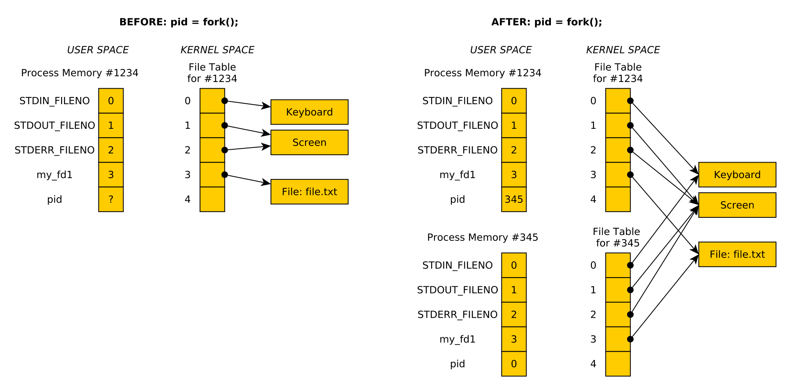
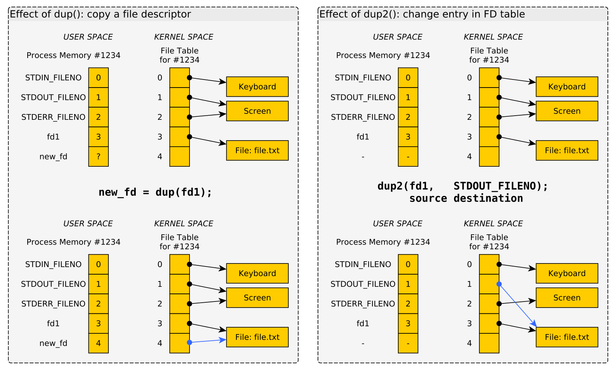

CMSC216 Lab10: I/O Redirection and Cache Optimization
- Due: 11:59pm Sun 22-Nov-2026 on Gradescope
- Approximately 1.00% of total grade
CODE DISTRIBUTION: lab09-code.zip
CHANGELOG: Empty
1 Rationale
Unix maintains a table of open File Descriptors for each running
process. Using the dup() and dup2() system calls, programs can
manipulate this table to achieve interesting effects, notably
redirection of output from standard locations to other places. This
exercise demonstrates some common techniques for doing so and will
acquaint students with the basics of how the file descriptor table
works and how it is inherited by child processes.
Utilizing CPU memory caches is essential for crafting high-performance programs. These arise frequently in matrix problems, one of which is presented here. A naive algorithm is shown with poor cache performance which must be adjusted to favor cache more effectively and increase performance. This gives a specific example of how to accomplish the same outcome while utilizing hardware more effectively.
Associated Reading
Bryant and O'Hallaron CS:APP covers I/O redirection in Section 10.9
which gives good treatment of the dup2(). The preceding Section 10.8
also discusses manipulations of the file descriptor table between
parent and child processes.
Bryant and O'Hallaron cover The Memory Hierarchy in Chapter 6 with 6.5 and 6.6 being particularly helpful for the matrix problem studied here.
Grading Policy
Credit for this lab is earned by completing the code/answers in the
Lab codepack and submitting a Zip of the work to Gradescope preferably
via running make submit. Students are responsible to check that the
results produced locally are reflected on Gradescope after submitting
their completed Zip.
Lab Exercises are Free Collaboration and students are encouraged to cooperate on labs. Students may submit work as groups of up to 5 to Gradescope: one person submits then adds the names of their group members to the submission.
No late submissions are accepted for Lab work but the lowest two lab scores for the semester will be dropped including zeros due to missing submissions. See the full policies in the course syllabus.
2 Codepack
The codepack for this exercise is linked at the top of this document. Always download it and unzip/unpack it. It should contain the following files which are briefly described.
| File | Use | Description |
|---|---|---|
switch_stdout.c |
Study | Problem 1: C file to study to answer QUIZ questions |
childout_query.c |
EDIT | Problem 1: code outline to complete |
nums.txt |
Data | Problem 1: Data used in the tests |
matvec.h |
Provided | Problem 2 Header file defining some types and functions for |
matvec_util.c |
Provided | Problem 2 Utility functions to manipulate matrices/vectors |
matsums_funcs.c |
EDIT | Problem 2 Small "algorithms" to time arithmetic operations |
matsums_main.c |
EDIT | Problem 2 Main function that times different summing techniques |
test_matsums.org |
Testing | Problem 2 code tests |
QUESTIONS.txt |
EDIT | Questions to answer: fill in the multiple choice selections in this file. |
QUESTIONS.txt.bk |
Backup | Backup copy of the original file to help revert if needed |
Makefile |
Build | Enables make test and make zip |
testy |
Testing | Test running scripts |
test_lab10.org |
Testing | Tests for this exercise |
gradescope-submit |
Provided | Allows submission from the command line |
3 Problem 1: I/O Redirection
Programs often need to deal with open files for reading and
writing. The UNIX Operating System (Linux included in this) maintains
a data structure called the File Descriptor Table for all open
files. Some entries in this table are automatically created like
Standard Input and Standard Output. Others are created via the
open() system call. The table is maintained in Kernel Space and can
only be altered via system calls like open() / close() / ~dup() /
dup2().
It is useful to have some diagrams of how the dup() and dup2()
system calls manipulate the table of file descriptors. The following
diagrams will be discussed in lecture and may be used by course staff
to assist students in understanding how programs like
switch_stdout.c work.
Fork and Child File Descriptors

Figure 1: Effects of open()'ing a file then calling fork() : the child and parent both refer to the same open file.
dup() and dup2() System calls

Figure 2: LEFT: Effect of calling dup() to create a duplicate file descriptor table entry. RIGHT: Effect of calling dup2() to overwrite on file descriptor entry with another.
4 Problem 2 Background: Timing Code
4.1 Timing Notes
This lab involves optimizing the performance of a function and the behavior of doing so will vary from one machine to the next. If run on an arbitrary machine, the optimization techniques intended may or may not provide the expected speedup.
For evaluation purposes, log into the machine login.zaratan.umd.edu
to test the timing. This machine has known characteristics (processor
speed and cache behavior) and should provide reasonably consistent
results. Other machines like laptops might work but are not
guaranteed.
4.2 The clock() Function
The code block below illustrates the basic usage pattern for the
clock() function.
#include <time.h> // for clock() and clock_t
{
clock_t begin = clock(); // current cpu moment
// Perform computation that takes a while;
clock_t end = clock(); // later cpu moment
double cpu_time = // convert into seconds
((double) (end-begin)) / CLOCKS_PER_SEC;
printf("Elapsed CPU Time: %f second\n", cpu_time);
}
A few caveats are worth pointing out.
- The
clock_ttype is often a large integer type likeunsigned longwhich is why one can perform subtraction using it. Don't rely on this being the case and just use the type indicated as shown. clock()itself returns a number corresponding to the number of CPU "ticks" which have occurred while the program runs. This requires conversion into the number of seconds shown above. It makes use of theCLOCKS_PER_SECONDconstant which is included viatime.h.- The time computed by this method is equivalent to the
usertime reported by thetimeutility: it is how much CPU time the user program has used. It is relevant to timing computational loops but is complemented by "wall time" which requires use of different timing functions likegettimeofday()to compute. WARNING: Timing code runs is inherently noisy and will vary from one run to the next.
clock()is reliable for timing computations that take around 0.001 seconds (a thousandth of a second). For times shorter than that, the variations in timing will likely be nearly as large as the total time which makes timing shorter activities unreliable.Adjust program parameters like the number of loop iterations so reported times are at least 1e-03 seconds. Ideally times should be larger, in the 1e-01 second range to be trustworthy. Automated tests of code already do this for test cases but when running manually, be cautious about trusting times that are too short.
5 QUESTIONS.txt File Contents
Below are the contents of the QUESTIONS.txt file for the exercise.
Follow the instructions in it to complete the QUIZ and CODE questions
for the exercise.
_________________
LAB10 QUESTIONS
_________________
Exercise Instructions
=====================
Follow the instructions below to experiment with topics related to
this exercise.
- For sections marked QUIZ, fill in an (X) for the appropriate
response in this file. Use the command `make test-quiz' to see if
all of your answers are correct.
- For sections marked CODE, complete the code indicated. Use the
command `make test-code' to check if your code is complete.
- DO NOT CHANGE any parts of this file except the QUIZ sections as it
may interfere with the tests otherwise.
- If your `QUESTIONS.txt' file seems corrupted, restore it by copying
over the `QUESTIONS.txt.bk' backup file.
- When you complete the exercises, check your answers with `make test'
and if all is well. Create a zip file and submit it to Gradescope
with `make submit'. Ensure that the Autograder there reflects your
local results.
- IF YOU WORK IN A GROUP only one member needs to submit and then add
the names of their group on Gradescope.
PROBLEM 1 QUIZ: Questions on switch_stdout.c
============================================
Analyze the `switch_stdout.c' program. Compile and run it via
,----
| > make switch_stdout
| ...
| > ./switch_stdout
| ...
`----
Analyze the code and focus your attention on the use of `open() /
dup() / dup2()' which this program demonstrates.
Answer the following Questions about the techniques used in this
program. You may need to consult the Manual Page / Documentation on
some functions to answer confidently.
Program Output
~~~~~~~~~~~~~~
Which of the following is the output for `switch_stdout' when run?
(each of 1. 2. 3. appear on separate lines in the output)
- ( ) 1. Now you see me. 2. Now you don't! 3. How mysterious...
- ( ) 1. Now you see me. 2. Now you don't!
- ( ) 1. Now you see me. 3. How mysterious...
- ( ) 1. Now you see me.
open() system call
~~~~~~~~~~~~~~~~~~
The `open()' system call is used to open a file for writing in the
example. What is returned by this system call?
- ( ) A `FILE *' which is passed to subsequent I/O operations or
`NULL' for failure
- ( ) An integer file descriptor which is >= 0 for success and -1 for
failure
- ( ) An integer return code that is 1 for success and 0 for failure
- ( ) A `char *' which is the name of the opened file or `NULL' for
failure
Use of dup()
~~~~~~~~~~~~
Which of the following best describes how the `dup()' system call is
used in `switch_stdout.c'?
- ( ) It creates a duplicate of a file descriptor allowing standard
output to be restored to the screen late in the program.
- ( ) It manipulates the file descriptor table so output that would go
to the screen goes into a file instead.
- ( ) It duplicates an existing file creating an efficient copy of it
on disk.
- ( ) It creates a child process that prints to a file instead of the
screen.
Use of dup2()
~~~~~~~~~~~~~
Which of the following best describes how the `dup2()' system call is
used in `switch_stdout.c' when it is first called?
- ( ) It creates a duplicate of a file descriptor allowing standard
output to be restored to the screen late in the program.
- ( ) It manipulates the file descriptor table so output that would go
to the screen goes into a file instead.
- ( ) It duplicates an existing file creating an efficient copy of it
on disk.
- ( ) It creates a child process that prints to a file instead of the
screen.
printf() changes in behavior
~~~~~~~~~~~~~~~~~~~~~~~~~~~~
Good old `printf()' is used in `switch_stdout.c' in several places but
seems to change its behavior in some of these spots. Which of the
following best describes this variation in behavior?
- ( ) `printf()' is called with different arguments that cause it to
print to different destinations, sometimes standard output,
sometimes a file
- ( ) `printf()' is called the same way in each case but automatically
begins printing to a file that is `open()''d and when it is
`close()''d, `printf()' reverts to printing to the screen
- ( ) `printf()' is called the same in each case and always prints to
standard output but by changing what is in the file descriptor table
at that position, output goes to the screen or to a file.
PROBLEM 1 CODE: childout_query.c Program
========================================
Fill in the template code provided in `childout_query.c'. The intent
of the program is to build off of the previous system calls like
`fork() / exec() / stat()' and combine then with the newly introduced
`dup2()' faclity to accomplish the following:
1. Specify an output file, a query character, and a command to run on
the command line
2. Fork and Exec a child process to run the given command and redirect
output into the named file
3. Have the parent wait until the child is finished
4. The parent then reports how many bytes of output are in the child's
output file
5. The parent opens the child output file, scans and prints it all
out, and reports how many times the query_letter appears in the
output
Below is a demonstration of how the program is meant to work.
,----
| >> childout_query
| usage: childout_query <childfile> <query_letter> <child_arg0> [child_arg1] ...
|
| >> childout_query test.txt 3 seq 31 35
| Child redirecting output to 'test.txt', then exec()ing
| Parent waited, Child complete, exit code 0
| child produced 15 bytes of output
| Scanning child output for '3'
| 31
| 32
| 33
| 34
| 35
| child output contained 6 occurrences of '3'
`----
Note that the 15 bytes of output is due to there being 5 lines with 3
characters each: all lines comprise two digits and a newline (\n).
Here is another example where an `ls' command is run as the child
process.
,----
| >> childout_query x.txt u ls /
| Parent waiting for child to complete
| Child redirecting output to 'x.txt', then exec()ing
| Parent waited, Child complete, exit code 0
| child produced 99 bytes of output
| Scanning child output for 'u'
| bin
| boot
| dev
| etc
| home
| lib
| lib64
| lost+found
| mnt
| opt
| proc
| root
| run
| sbin
| srv
| swapfile
| sys
| tmp
| usr
| var
| child output contained 3 occurrences of 'u'
`----
PROBLEM 2 QUIZ: Questions on matsums
====================================
(A) Vector and Matrix
~~~~~~~~~~~~~~~~~~~~~
Examine the header file `matvec.h' which gives type definitions and
declares functions associated with a simple matrix and vector type.
Which of the following best describes how the `matrix_t` type in the
lab stores numerical matrices?
- ( ) The 2D matrix is stored as a 2D array in the field data; this
allows direct access via 2D indexing via `mat.data[i][j]`
- ( ) The type `matrix_t` is defined as the same as a `int[][]` so the
2D data can be directly accessed via `mat[i][j]`
- ( ) The 2D matrix is stored as a 1D array in the mat.data field. 2D
accesses like `(i,j)` must be translated to 1D locations via the
formula `mat.data[i*mat.cols) + j]`
- ( ) The 2D matrix is stored in a hash table with the `mat.data`
field storing data and a hashing function used to compute the 1D
location of a 2D element.
(B) Getting and Setting Elements
~~~~~~~~~~~~~~~~~~~~~~~~~~~~~~~~
For the `matrix_t' and `vector_t' types, convenient means to get and
set elements is provided. This mechanism is used in the utility
functions in `matvec_util.c' and defined in `matvec.h'.
Which of these best describes the means to access matrix elements
provided and used in the lab?
- ( ) The functions `MGET(mat,i,j)` and `MSET(mat,i,j,x)` are
implemented in the header to get and set elements of a `matrix_t`
- ( ) The macros `MGET(mat,i,j)` and `MSET(mat,i,j,x)` are `#define`'d
in the header to get and set elements of a `matrix_t`
- ( ) Instructions are given about what formula and fields to use when
accessing and changing elements of the matrix.
- ( ) No easy way is given for to work with the `matrix_t` type or its
elements.
(C) row_sums vs col_sums Timing
~~~~~~~~~~~~~~~~~~~~~~~~~~~~~~~
LOG INTO THE MACHINE Zaratan for timing experiments
- This is the machine for which the times of this code have been tuned
- Using a different machine for your timing may lead to problems
Compile and run the `matsums_main' executable using the provided
`Makefile' (typing `make' should suffice). Note how to run this
program: pass the row and column sizes as command line parameters.
,----
| >> ./matsums_main
| usage: ./matsums_main <rows> <cols>
`----
Run this program with differing parameters which control the number of
rows and columns in the matrix which is summed. Study the results,
including on a large matrix with 18000 rows and 8000 columns. Note
any speed differences between the Row and Column sum routines on large
matrices.
The result of this timing indicated the following relative speeds of
these two provided algorithms.
- ( ) Summing ROWS was SLOWER than summing COLUMNS
- ( ) Summing ROWS was the SAME speed as summing COLUMNS
- ( ) Summing ROWS was FASTER than summing COLUMNS
- ( ) The speed varies wildly from run to run so it is harder to say
which of ROWS or COLUMNS is faster
(D) row_sums vs col_sums speed
~~~~~~~~~~~~~~~~~~~~~~~~~~~~~~
Examine the source code for the functions `row_sums()' and
`col_sums()' in the file `matsums_funcs.c'. Describe why the
timing/speed differences you observed previously are occurring based
on features of the source code you see and the layout of the
`matrix_t' that is being summed. Consider especially the memory layout
and how the elements visited in the row vs col approach maps to the
actual data layout of the matrix data.
Which of the following best describes a reason for the relative speeds
of the algorithms?
- ( ) The two algorithms had equal speed as they perform the same
number of operations and have the same `O(R*C)` complexity.
- ( ) Row Summing was Faster because it accessed memory sequentially
while Column summing has a large stride in memory leading to poor
cache performance.
- ( ) Column Summing was Faster because it accessed memory
sequentially while Row has a stride in memory leading to poor cache
performance.
- ( ) Column summing was slower because the Row summing algorithm
exhibited better processor pipelining features allowing more
instructions per cycle to be executed.
PROBLEM 2 CODE: opt_col_sums()
==============================
Complete the function `opt_col_sums()' in file `matsums_funcs.c'. This
function should have identical behavior to `col_sums()' (it sums the
columns of the matrix into a provided array). However, it should be
*optimized* so that it achieves performance near to that of the
`row_sums()' function. To achieve this, re-arrange the loops to
iterate as efficiently as possible with respect to the memory
system. Feel free to ask course staff for hints on how to do this or
do some online research.
To time `opt_col_sums()', uncomment relevant blocks in the
`matsums_main.c' program that are provided for it.
Run your code on some of the large matrix examples previously used
such as an 18,000 by 8,000 matrix. If the speed for the optimized
column version is close to that of the row sums, try running the test
cases associated with the code via `make test-code'.
NOTE: The test cases for the CODE via `make test-prob2' and `make
test' take MORE TIME than normal as they are run on some sizable
matrices. This ensures that the optimized column algorithm students
concoct really runs faster on large matrices than the naive column
algorithm.
Follow the instructions at the end of Lab01 if you need a refresher on how to upload your completed exercise zip to Gradescope.